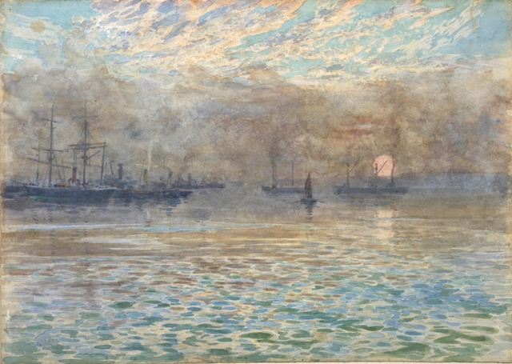

Welcome to NZCommons
BY MATT MCGREGOR
Welcome to NZCommons, a site dedicated to opening New Zealand's culture and knowledge for sharing and reuse. Managed by Creative Commons Aotearoa New Zealand, NZCommons aims to be a busy community resource on the commons, with pieces ranging across government, data, education, copyright, heritage, research and the arts. We'll be adding additional categories as the site develops.
But why create a new site? While an increasing number of kiwis are sharing their work for reuse -- including schools, universities, musicians, museums and government departments -- we think it can be hard to find reliable commentary and advice on copyright and the commons.
We want NZCommons to be an information hub for the enormous number of New Zealanders, from librarians and teachers to artists and iwi groups, who are both excited and anxious about sharing their own work more openly and reusing content they find online.
At the moment, most of the content on NZCommons was written by or for Creative Commons Aotearoa NZ over the last four years -- but that will soon change. NZCommons is a community website, which means that its character will be largely determined by the people who volunteer to write for it. We've got dozens of people lined up to write for us over the next few months, from a variety of different fields.
At the same time, we're always on the lookout for more contributors. If you've got something to say about copyright, licensing and/or the commons in Aotearoa, then check out our contributors page and get in touch.
You'll also note, between the articles, some particularly wonderful images. Most of these were sourced from Te Papa's great tranche of out-of-copyright or CC licensed treasures, released a few weeks ago. We'll continue to plunder this and other great New Zealand open resources, including the ever-growing resources at DigitalNZ. If you see or make anything that needs showing off on our site, let us know.
We want the content on this website to travel, so unless we say otherwise, all the words on this website are licensed under a Creative Commons Attribution 3.0 New Zealand licence. You'll have to check the referencing for the images, which, like the wintery Wellington image below -- chosen because I'm writing from a particularly wintry Wellington morning -- is sourced from elsewhere.
Finally, we'd like to thanks our partners, InternetNZ and Land Information New Zealand, who ensure that Creative Commons continues to flourish in Aotearoa New Zealand. We'd also like to thank Prefer, for their in-kind support, and the Open Education Resource Foundation, the new affiliate hosts of Creative Commons Aotearoa New Zealand.
 Reference: Winter morning, Wellington Harbour, circa 1900, Wellington, by James Nairn. Gift of Miss Mary Newton, 1939. Te Papa (1939-0009-7). Copyright: No known copyright
{kind=link}
Evans Bay Image

Reference:Evans Bay, 1893, Wellington, by James Nairn. Bequest from the estate of Miss S Leatham, 1939. Te Papa (1939-0009-6)
Copyright: No known copyright
Taupaki School
BY MATT MCGREGOR
Taupaki School is a co-educational primary school, located an hour north-west of Auckland. On 20 February 2013, Taupaki School’s Board of Trustees passed a Creative Commons policy, giving permission to Taupaki’s teachers to share and collaborate, legally.
Paula Hogg has been the chair of the Taupaki BoT since 2012, and oversaw the passage of the Creative Commons policy. As Paula explains, the idea for the policy was initially introduced by the school’s principal, Stephen Lethbridge. While the BoT didn’t have any specific expertise on copyright or intellectual property, Stephen ensured that they had all the necessary information.
“We got a great letter from Stephen outlining all the issues, and following that we put it on the agenda for the next meeting. Stephen provided a lot of information for us to read prior to that meeting, so we felt quite well prepared.”
Nevertheless, copyright and intellectual property were new issues for the BoT. As Paula says, “Creative Commons was something we’d never heard of -- it wasn’t even on the periphery. While we were aware of copyright laws, we were not as well informed around exactly what was Board and teacher owned.”
According to New Zealand’s 1994 Copyright Act, employers hold first ownership of copyright works produced in the course of employment. As is stated in TKI, the Ministry of Education’s information portal, this means that, “Unless agreed otherwise, the school will own the copyright in any teaching materials that teachers (employees) create during the course of their employment.”
Simply put, this means that teachers who share resources may often be infringing the school's copyright. Creative Commons policies solve this problem by enabling the school to give advance permission to all teachers to legally share and collaborate using an open Creative Commons licence.
Stephen Lethbridge introduced the idea of the policy after noticing that, as he put it in a blog post, that “teachers were sharing more on more resources online and connecting with a great many schools who were visiting us. It would have been a nightmare to seek permission from the board, more likely the school principal, every time a teacher or student wanted to share information.”
As Paula points out, the policy is also strongly aligned with the school’s existing vision. “Our school’s vision strongly encourages collaboration, and we encourage sharing, so it was a bit of a shock to learn that we needed to have a policy for teachers to share legally.”
“The Creative Commons policy was very aligned with our thinking as a board. There was no dissonance in our discussion. The main issue was that everyone was surprised to discover that this isn’t normal practice.”
According to Paula, the CC policy passed because it supported the fundamental mission of the school -- improving student outcomes. “We knew from the documentation Stephen provided, and from other background reading, that professional development is actually one of the best ways to lift student outcomes. And a big part of professional development is sharing best practice, including resources”
Paula also points out the importance of BoTs aligning their school with existing government policy. While the New Zealand Government’s Open Access and Licensing framework encourages schools to use CC to release copyright works, relatively few schools are aware that the policy exists.
Given the number of policy and procedural issues confronting schools, it’s also unlikely that BoTs will seek out additional policy changes that aren’t brought to their attention.
“It’s important that Boards don’t just view this as a legal obligation and stop there. It does encompass a lot more than that, and it’s important that Boards are aware of that.”
As Stephen points out, “With the Network for Learning Portal just around the corner school leaders need to revisit their intellectual property documentation. Creative Commons in Schools isn’t about abdicating responsibility and a copy anything approach. It is about acknowledgement, respect and attribution where the license is determined by the creators of amazing information, resources and ideas within our schools.”
More information:
Learn more about Creative Commons in New Zealand Schools
Read Stephen Lethbridge’s blog post, Creative Commons and Schools.
Get in touch with CCANZ to ask for resources or request a workshop.
Listen to Stephen’s presentation at the CC in Schools roadshow, from March 2014.
Follow Paula (@diana_prince_ww) and Stephen (@stephen_tpk) on Twitter.
The Unintended Benefits of Libre
DANIEL STRYPEY BRUCE
When Land Information New Zealand officials, prompted by the support in NZGOAL for free culture CC licenses, started liberating the publicly-funded map data they hold under CC-BY, they may have anticipated that their data could end up in OpenStreetMap.org (OSM). OSM is the libre licensed, crowdsourced, world mapping project (formerly CC-BY-SA, now Open DataBase License) created as a free-as-in-speech alternative to Google Maps, which licenses copyright map and image data from other companies. What they probably never imagined was their data appearing on community sites like the new NSW government funded TimeBanking platform and in maps powered by Leafet, the free code, mobile-friendly, web map engine which uses OSM as the default source for map data. Such are the unintended benefits that flow from sharing in the commons.
Just as OSM contributed to the development of websites using Leaflet, the cultural commons also has a contribution to make to the development of free code speech recognition software. Douglas Bagnall gave a great talk about free code speech recognition engines at Kiwi PyCon 2012, and one of the main non-coding challenges he identified is the lack of a suitably large corpus of spoken speech with which to train' the software (the interesting bits for non-coders starts at about 3:00), particularly for less common accents like New Zealand English.
Douglas mentioned a site called VoxForge.org and encouraged us all to record some speech for it. VoxForge collects samples of speech to "compile them into acoustic models for use with Open Source speech recognition engines", with both the acoustic models and the source data are made available under the GNU General Public License, the free code software license used by the Linux kernel.
Voxforge is a great resource, but it would be a lot of work to drive enough 'Nu Zylnd' accented speakers there. and it occurred to me recently that there is another source of spoken speech for which there is strong argument for libre licensing; public interest radio. Releasing audio programs made for National Radio, student radio, and community access radio, under a libre license (eg CC-BY), has always seemed like a no-brainer to me. Even before I set up the CC-NZ email list, I was contacting community radio people and telling them about the potential benefits of podcasting and CC licensing for increasing program exposure, as part of my work with Aotearoa.Indymedia.org.
National Radio are publicly-owned and funded, and currently podcast all their programs in both MP3 and Ogg Vorbis formats. Student radio stations have also been experimenting with recording their shows and turning them into podcasts, and if they libre licensed the sometimes substantial spoken word parts of recordings like the Radio1 shows shared on MixCloud, they'd be unlikely to miss out on any commercial return.
Community access radio stations, as their name suggests, exist to give special interest groups in our communities access to the airwaves, so their unique voices have a chance to be heard in broadcast media. Access stations are heavily subsidised by public broadcasting funding, and their programs aren't expected to have commercial potential.
Whenever these programs are rebroadcast, both the program producers, and the public who subsidize their production, get more bang for their buck. Over the last decade or so, access radio stations have been building up the infrastructure to digitally record programs, so they can be made available as podcasts, on sites like accessradio.org.
What I notice in all three cases though, is that despite NZGOAL-inspired wave of CC license adoptions across public service organisations from LINZ, to schools and tertiary institutions, to archives and museums, I see no sign of CC licenses on locally made radio so far. I'm guessing one issue is legal confusion and risk aversion.
For example, if I want to CC my radio program, what about the copyright songs I played during the program? Who owns the copyright on ads, and is it acceptable to remove them? Radio stations and rebroadcast sites can pay a fixed fee to collection organisations like NZRIA and APRA for permission to play the songs, but they can't pass on that permission to anyone who rebroadcasts the program.
What can we do to show public radio stations that libre licensing - CC or otherwise - is a good fit for their organizational mission, and help them negotiate the legal minefields around copyright? Between them, the RadioNZ, community access, and students stations have vast numbers of hours of recordings, covering a wide range of kiwi accents spoken regularly on ethnic community radio programs. Having these available under a libre license would have benefits beyond just sharing the information and perspective included in public interest radio programs.
It could also be tremendously helpful to people working on getting free code/ open source speech recognition software to recognise New Zilnd accents, which in turn would be tremendously helpful for any kiwi wanting a speech-operated computer that respects their software freedom. The same would be true for speakers of Te Reo Māori, and other Polynesian languages, who, like NZ English speakers, are also less likely to record enough speech at sites like VoxForge for them to generate a useful acoustic model.
In 'The Coming Civil War over General Purpose Computing', Cory Doctorow asks us to consider the implications if the proprietary software running on many of our personal computers was instead running on our bionic legs;
"If I can lo-jack your legs, I can lease them to you with the confidence of my power to repo them if you default on payments. If I can't, I may not lease you legs unless you've got a lot of money to begin with. But if your legs can decide to walk to the repo-depot without your consent, you will be totally screwed the day that muggers, rapists, griefers or the secret police figure out how to hijack that facility."
Like bionic legs, accessibility tools like speech recognition and text-to-speech are augmentations which restore equalit, helping people with conditions from blindness to quadraplegia to have the full use of computers and the internet that most of us take for granted. Such essential tools should not be subject to the price pumping and hidden agendas that go with proprietary sofware.
Daniel is a community organiser and long-time Creative Commons Aotearoa NZ supporter, based in Ōtepoti (Dunedin). Daniel set up InterActive, a media activist resource centre and was one of the founders of pioneering citizen journalism website Aotearoa Indymedia. He also set up the Aotearoa Permaculture Network. Daniel also helped to kick off the Aotearoa/ New Zealand localisation of the CreativeCommons licenses with the cc-nz email list. You can read Daniel's full bio at Disintermedia.
Meena Kadri
BY MATT MCGREGOR
Meena Kadri is a Wellington-based photographer, designer and Community Manager for OpenIDEO, a collaborative innovation and design platform.
A long-time user of Flickr (under the name Meanest Indian), Meena releases many of her photos under a Creative Commons Attribution-Non-Commercial-No Derivatives licence. Her CC-licensed images have appeared in a variety of newspapers, magazines, blogs and books, and have been licensed for commercial use by companies like Phaidon and Apple.
Despite this success, Meena confesses that she “never actually intended to sell my photos—I just wanted to put them online. But pretty soon I realised the potential.”
While teaching at India’s National Institute of Design in the mid 2000s, Meena started using Flickr to source high-quality images for her presentations; by 2006, she was using Flickr to share her own photos. “Flickr was the first social network I’d ever used. I realised pretty quickly how to optimise traffic to my site using tags, especially because I was taking photos of events that were both in demand but under-photographed, such as the Uttarayan Kite Festival in India. It didn’t take long to get my photos on the front page of Flickr image search for certain topics.”
Her most popular set of photos--on the Uttarayan Kite Festival, India--has received over 50,000 views. Other popular sets include Indian Street Art (over 40,000 views), Back View Bollywood (nearly 25,000 views) and Faces of India (over 19,000 views).
Given the popularity of her Flickr account, her images have featured in countless blogs and presentations. For-profit companies have also paid to use her work, including Serendib, the magazine of Sri Lankan Airlines, and Phaidon Books, who included ten of her images in an Indian cookbook. As Meena explains, “what I usually do in these situations is negotiate. For those people with little or no money, such as NGOs, I usually say go for it. For others, I ask, ‘are you getting paid?’ The implication is that if they are getting paid, then I should be getting paid as well. For them, I charge my standard rate.”
Recently, Meena even licensed one of her Creative Commons licensed photos to Apple, her biggest sale so far. At the same time, Meena ensures that images sold to for-profit companies like Apple and Phaidon remain available for reuse under their original non-commercial Creative Commons licence.
As Meena’s images grew in popularity, she experimented with using Getty, a stock image service. While she made a small amount of money from the service, Meena “didn’t like that they required you to use All Rights Reserved. I tried it, because they do move a lot of images, but in the end I decided that I preferred using Creative Commons on Flickr.”
One reason for this is that Creative Commons licences require attribution, which is not the case with stock image services like Getty. As Meena explains, “The Creative Commons licences means that I receive a lot of traffic from having lots of sites—from major technology blogs like Wired to smaller community blogs with loyal followers—link back to my Flickr page."
While Meena is keen to emphasise that the upsides of using Creative Commons licensing greatly outweigh the downsides, she has noticed her images being used without proper attribution. “Every now and then, I’ll find unattributed images and send a nice email asking for attribution. It’s important to be nice, as a lot of people genuinely don’t know how the licences works. I tend to assume it’s a mistake, and send them a link to the licence page.”
Other uses have been more problematic. While visiting her father’s hometown in India, Meena opened a major local newspaper to find one of her images used—for commercial purposes and without attribution—to advertise the upcoming Kite Festival. Meena got in touch with the newspaper, pointed out that they did not have a licence for commercial reuse, and was eventually paid her standard rate.
To prevent unlicensed commercial reuse, Meena only puts web-quality images on her Flickr page. This means that her images are good enough for blogs or slideshow presentations; those wanting to use her images for books or posters, however, will need to ask for a higher resolution.
As a Google Image search for 'Meanest Indian' reveals, Meena's CC-licensed photos are being freely reused all over the web. At the same time, for-profit companies are continuing to pay to licence her work for commercial purposes--a great example of artists making money using Creative Commons Non-Commercial licences.
If you want to check out Meena's photos--and maybe even use them yourself--check out her Flickr page. To learn more about Meena's other work, check out her website, Random Specific.
Richard White
BY HANNAH METTNER
Richard White is an interesting example of an artist using CC to make his own creative output available, while working in a job that clearly demonstrates the pitfalls and possibilities of copyright and open access day in and day out.
Richard has made two of his albums available for download on Bandcamp, under the name Mermaid Guitar. He began by offering his earlier album, ‘Me for a Day’, with a five dollar price tag, and then decided to offer ‘Barry Starr’ for free, with the “name your price” function, where users choose how much they’d like to pay.
Despite being available for free, the second album has had more downloads and more sales -- so he’s now offering the earlier album under the same terms. For Richard, this makes the process of selling an album more exciting. As he puts it, “People have paid a lot more than I thought they might, more than the five dollars I initially offered the first album for."
Plenty of others have downloaded his music for free, but Richard says that he’s totally happy with this. “Ultimately I just like the idea that someone’s listening to my music on their iPod on the other side of the world”. But he’s also careful to point out that he doesn’t try to make a living from his music and concedes that, for those who do, there are greater challenges.
As part of the production process, Richard sourced all artwork for ‘Barry Starr’ from Public Domain or CC sources, but he says finding images which could be used with the CC BY SA licence he used for the album, which also fit his purpose, was trickier than he thought.
“There were some great images I really liked, but they had either ND or, more commonly, NC," Richard says. "Given that people could pay, I couldn’t use NC. I guess the difficulty I had finding good stuff showed me that open access is still at the ‘evangelical’ stage in many respects and we need more converts for it to become more self-sustaining”.
By day, Richard works as Copyright Officer at the University of Otago, addressing any copyright issues or questions encountered by staff and research students there. This can be a challenge: while most staff have an understanding of the broad concepts of copyright, it can be a complex web of legislation, licences and rights.
Richard has found himself a staunch advocate of open access in the tertiary sector and CC as the main vehicle for that. “CC licences simplify a lot of things from a copyright point of view”, he says. “Often a staff member or a PhD student will come to me or one of our library staff with questions about permission for something they want to use in a piece of research. One of the most common problems is that they just don’t hear from someone they’ve contacted to get permission”.
He says a lot of the time accessibility is the last thing researchers and academics are thinking about. They’re used to things being done a certain way and aren’t necessarily aware of the open access alternatives. Their reputations as academics are affected by how often they’re being published in scholarly journals, and the quality of those journals is taken into account too.
“That’s the major roadblock for open access publications, just getting enough visibility and usage to attract good quality research, to gain a name as a good journal, not just an open access journal. I mean, I’d love it if all research was open”.
Other countries are mandating that all publicly funded research should be open -- the U.S. Government, for example -- but New Zealand isn’t making any moves yet. Instead academics do their research, write it up, submit it for publication, go through the peer review process, and are accepted into these big journals where they’re published, which universities around the world then pay subscription fees to access.
He appreciates the freedom Creative Commons licences give both creator and reuser, academic and artistic. “When someone has used a CC licence they’ve declared up front what they’re happy for others to do with their work. So part of my work is helping people understand the implications of their choices with their own work as part of the knowledge ecosystem.
"In that respect it’s no different from choosing CC in an artistic medium: you’re sharing your work for others to use and build on. I can’t claim that my music has informed great cultural achievements but there are people who’ve put it in compilations or used it in their films, which is immensely satisfying”.
Further links
- Richard White's Mermaid Guitar Bandcamp Page
- The University of Otago Open Otago Blog
- The University of Otago Copyright Page.
NZ On Screen and Audio Culture
By Hannah Mettner
In 2009, we published a quick case study of NZ On Screen, which was then only two years old. With the launch of its sister site, Audio Culture, in 2013, we thought we'd take the opportunity to revisit both projects. Creative Commons Aotearoa NZ intern Hannah Mettner sat down with NZ On Screen Project Director Clarion Coughlan.
NZ On Screen has provided online access to a wealth of New Zealand film, television and music video since 2008. From the outset they’ve used a Creative Commons Attribution Noncommercial licence for all the work they put into the site. While the video content belongs to the rightsholders, all the synopses, backgrounds and biographies relating to videos and people is licensed under CC. And this material is impressive in its scope and quality; the introductions to the collections, particularly, are personable as well as thorough.
Clarion, the Project Director, talks about how they want to make the content work; their aim is not to put everything they possibly can online, but rather to choose culturally significant pieces and give them space to talk to each other.
NZ On Screen is a curated website, carefully chosen and added to, and the context provided by the written material is crucial. Clarion says “rather than just publishing videos, we contextualise them through our writing. As NZ On Screen has been paid for by tax payers (via NZ On Air funding), it makes sense to make that writing available under Creative Commons: To give something back”.
Having that CC licensed work reused also serves as a useful advertising tool; when writers reuse their pieces on blogs or have them published elsewhere, and actors’ agencies reuse what is effectively a pre-written biography, the CC licence brings people back to the NZ On Screen website.
Perhaps due to the popularity of NZ On Screen, May 2013 saw the launch of a sister project, Audio Culture – the ‘noisy library of New Zealand music’. The site aims to address the ‘digital silence’ that has surrounded New Zealand music online, and to collect together the stories, multimedia and ephemera that have contributed to NZ music from the last 100 years.
AudioCulture kicked off with 250 pages of people, labels and scenes, all under searchable indexes, plus music, interviews and photographs, with another 300 pages following in the second year. It was certainly very well-received, gaining 25,000 page views in its first month live.
Following the successful formula employed over at NZ On Screen, the music on the site is licensed by PPNZ Music Licensing and APRA/AMCOS and the images have been cleared with copyright owners, but the written content in Profiles, Stories, Labels and Scenes all falls under the CC-BY-NC licence. Like the written content on NZ On Screen, these pieces are not brief introductions; they are well-researched and in-depth, written by a wide variety of contributors, often with a personal connection to the subject, providing an extraordinary depth of context.
Copyright: The Informal Formality
By Conal Thompson
It is a common misconception that copyright in a work needs to be registered in order to be recognised. The truth is that in New Zealand copyright exists as soon as a work is created, and whether or not copyright does exist in a work is determined by a set of rules established by the Copyright Act 1994.
The distinct lack of formalities required by copyright law has increasingly become an issue with the rise (to use a favourite term of journalists and academics) of the “scary internet machine-monster” (okay, I made that one up).
What's the issue? Take, for instance, a picture that I draw of the “scary internet machine-monster” that I then publish online. From the second that I publish it, copyright exists in that drawing, which is owned by me.
This is regardless of whether or not I put my name to it, place a little ©-symbol next to it, or provide any details that can easily trace the drawing back to its creator (me).
Let's say I chose not to do any of those things when I published it. This is what many people do (or to put it better, don’t do) when they publish their work online. Such a work is known as an “orphan work” – meaning the owner of copyright is difficult to find or untraceable.
The problem with this is that if my picture became really popular and other people wanted to use it, the lack of information I provide with the picture makes it difficult for those people to contact me and gain my permission to use it.
This won’t prevent the spread of the picture onto other websites that make no money from it – but what if a big-shot clothing manufacturer decided they wanted to pay me to put my drawing onto t-shirts that they sell? Unfortunately for me, that lucrative deal won’t be making its way into my bank account, because I didn’t provide details of who owns the copyright, and the spread of the picture onto a multitude of other websites would have made it virtually impossible for the manufacturer to track down its origin.
If I applied a Creative Commons license to it, however, then it would make it a lot easier for other users to trace its ownership back to me. Say that I wanted my drawing to be able to be shared and easily attributable back to me – I would add a CC BY-NC licence to it, so that others could use it but not make any money from it.
This means I still have the exclusive right to commercially benefit from it, meaning that big-shot clothing manufacturer can still come knocking at my door and I can still earn reward for my work – most of all because this time around, they know where to find me.
Note: In 2013, the Berkeley School of Law hosted a symposium on this very issue, called “Reform(aliz)ing Copyright for the Internet Age”. If you’re interested in the legal and political debate surrounding the establishment of formalities for copyright law then head over there and take a look.
Kororareka Beach, Bay of Islands, New Zealand

Reference: Kororareka Beach, Bay of Islands, New Zealand, circa 1856, by Thomas Gardiner. Purchased 1993 with New Zealand Lottery Grants Board funds. Te Papa (1993-0029-1)
Copyright: No known copyright,
The Open Media Textbook Hack
[This is the media release for the Media Text Hack, completed on the weekend of 16-17 November. The project was covered by the ODT, Techday and Idealog]
On the weekend of 16-17 November, a group of academics across Australia and New Zealand are getting together at their respective campuses to collaboratively write – or ‘hack’ – an open textbook.
Led by Dr Erika Pearson, Richard White and Simon Hart at the University of Otago – with assistance from Bernard Madill – the open textbook project will be an experiment in the production of open educational resources in Aotearoa New Zealand.
This textbook will be for undergraduate students in Communication and Media Studies around Australia, New Zealand and the Pacific.
With contributions from academics across New Zealand and Australia, the textbook will be free of all technical and legal restrictions on access and reuse. This means that it will free for by anyone in the world to read, distribute and adapt.
As Dr Pearson, Senior Lecturer in the Department of Media, Film and Communication, says, “Textbooks currently available for New Zealand first year students are often produced overseas, usually the US, and can have a cripplingly high price tag.
“Open texts are not only more affordable for students, they also are more flexible for teachers, who can pull apart open textbooks to find the more relevant and useful materials for their classes.”
University of Otago Copyright Officer Richard White agrees. “I often get questions from staff about using various types of materials for teaching purposes. Often with closed resources, restricted by all-rights-reserved copyright, staff get frustrated that they can’t provide a good resource to students in the way they want because of cost or difficulty in contacting – or event identifying – the rights holder.”
White sees the open textbook projects as a return to the “core principles of academia: sharing knowledge, learning from and building on the work of others.”
The open textbook will use a Creative Commons Attribution licence, enabling anyone to share, adapt and rewrite the textbook, as long as credit is given to the original creators. Creative Commons International is partially funding the project, through a grant to Creative Commons Aotearoa New Zealand.
White says that Creative Commons licensing “is the perfect vehicle. It ensures our rights as creators are preserved while at the same time enabling others to share our work as widely as possible.”
“Open textbooks, using Creative Commons licensing, are flexible. They don't force you to fit other people's pedagogy,” says Dr Pearson.
The team was inspired by a group of Finnish mathematicians who successfully wrote an open mathematics textbook in a weekend.
The team hopes that their project will inspire other open textbooks in the region. As Dr Pearson puts it, “This is why we are producing in parallel a 'cookbook,' to give detailed tips and advice for anyone who wants to attempt a similar project.”
For White, the project will “allow students in our region to access a work in their own cultural paradigm and for others to build on it. And we think that recording the process and telling people what worked and what didn’t is just as important as the text itself.
“This is a new way to produce work like this and we’ll all be learning a lot as we go. It’s a real challenge but really exciting at the same time.”
Except where otherwise noted, copyright content on this site is licensed under a Creative Commons Attribution 4.0 International Licence.